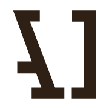
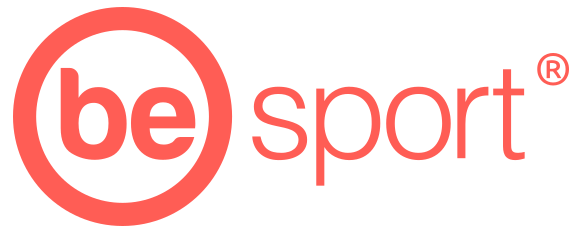
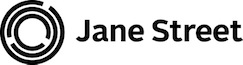

Le Consortium Caml à l'Inria
Le Consortium Caml fédère les efforts de conception et de développement du langage OCaml et de son environnement. Le Consortium permet à ses membres de montrer leur intérêt pour le langage OCaml et de soutenir son développement. Ils bénéficient de plus d'une license spécifique.
La cotisation annuelle des membres peut être ou bien très modeste (3500€) ou plus conséquente (10000€ ou plus) selon le niveau de soutien que le membre désire apporter. L'adhésion au Consortium OCaml est un acte important, non seulement pour le développement du langage et sa dissémination, mais aussi pour sa pérennité.
Membres
|  |  | |
 |
||
 |
||
|  | Kernelyze LLC | |
 |
Comment adhérer ?
Pour vous permettre d'adhérer en toute connaissance de cause au Consortium OCaml, il vous est possible au préalable de consulter en ligne l'accord de partenariat et ses annexes, disponible au format PDF. Voir aussi la fiche d'informations concernant la TVA.
Si les clauses du Consortium vous agréent, vous pourrez alors compléter et envoyer le formulaire d'adhésion disponible en ligne. Cette demande sera examinée par un représentant habilité de l'Inria qui vous recontactera ensuite pour organiser la signature de l'accord en deux exemplaires.
Après signature par un représentant de votre entreprise/organisme et par un représentant habilité de l'Inria, une facture correspondant au montant de votre participation financière vous sera envoyée.